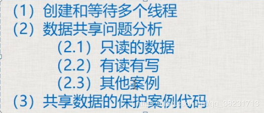
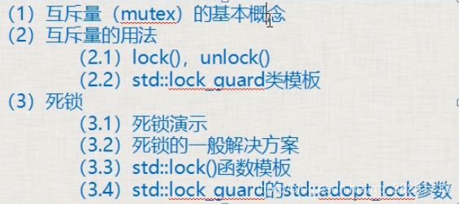
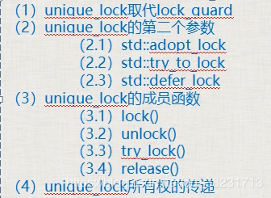
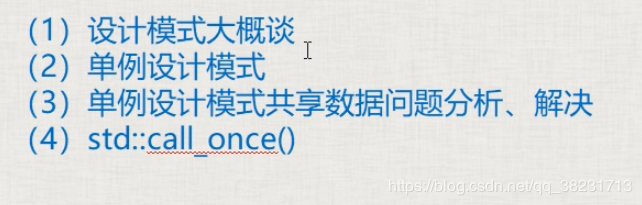
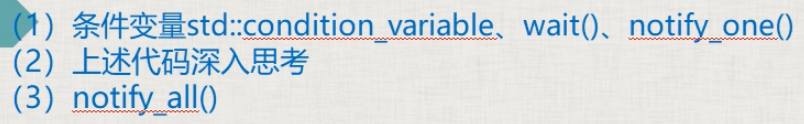

第四节 创建多个线程、数据共享问题分析、案例代码

一、创建和等待多个线程
1 | void TextThread() |
- 把thread对象放入到容器中管理，看起来像个thread对象数组，对一次创建大量的线程并对大量线程进行管理有好处
- 多个线程执行顺序是乱的，跟操作系统内部对线程的运行调度机制有关
二：数据共享问题分析
2.1 只读的数据
- 是安全稳定的
2.2 有读有写
- 若不加处理，就会出错
- 最简单的防止崩溃方法：读的时候不能写，写的时候不能读。
- 如果写的动作分10小步，由于任务切换，导致各种诡异的事情发生（最可能的还是崩溃）
第五节 互斥量概念、用法、死锁演示及解决详解

一、互斥量（mutex）的基本概念
- 互斥量就是个类对象，可以理解为一把锁，多个线程尝试用lock()成员函数来加锁，只有一个线程能锁定成功，如果没有锁成功，那么流程将卡在lock()这里不断尝试去锁定。
- 互斥量使用要小心，保护数据不多也不少，少了达不到效果，多了影响效率。
二、互斥量的用法
包含#include<mutex> 头文件
2.1 lock()，unlock()
- 步骤：1.lock()，2.操作共享数据，3.unlock()。
- lock()和unlock()要成对使用
2.2 lock_guard类模板
std::lock_guard<std::mutex> sbguard(myMutex);取代lock()和unlock()- lock_guard构造函数执行了mutex::lock();在作用域结束时，调用析构函数，执行mutex::unlock()
三、死锁
3.1 死锁演示
死锁至少有两个互斥量mutex1，mutex2。
- a.线程A执行时，这个线程先锁mutex1，并且锁成功了，然后去锁mutex2的时候，出现了上下文切换。
- b.线程B执行，这个线程先锁mutex2，因为mutex2没有被锁，即mutex2可以被锁成功，然后线程B要去锁mutex1.
- c.此时，死锁产生了，A锁着mutex1，需要锁mutex2，B锁着mutex2，需要锁mutex1，两个线程没办法继续运行下去。。。
3.2 死锁的一般解决方案：
只要保证多个互斥量上锁的顺序一样就不会造成死锁。
3.3 std::lock()函数模板
- std::lock(mutex1,mutex2……); 一次锁定多个互斥量（一般这种情况很少），用于处理多个互斥量。
- 如果互斥量中一个没锁住，它就等着，等所有互斥量都锁住，才能继续执行。如果有一个没锁住，就会把已经锁住的释放掉（要么互斥量都锁住，要么都没锁住，防止死锁）
3.4 std::lock_guard的std::adopt_lock参数
- std::lock_guardstd::mutex my_guard(my_mutex,std::adopt_lock);
加入adopt_lock后，在调用lock_guard的构造函数时，不再进行lock(); - adopt_guard为结构体对象，起一个标记作用，表示这个互斥量已经lock()，不需要在lock()。
1 |
|
第六节 unique_lock（类模板）详解

1.unique_lock取代lock_guard
unique_lock比lock_guard灵活很多（多出来很多用法），效率差一点。unique_lock<mutex> myUniLock(myMutex);
std::chrono::milliseconds sec(20000);
std::this_thread::sleep_for(sec);
2.unique_lock的第二个参数
2.1 std::adopt_lock：
- 表示这个互斥量已经被lock()，即不需要在构造函数中lock这个互斥量了。
- 前提：必须提前lock
- lock_guard中也可以用这个参数
2.2 std::try_to_lock：
- 尝试用mutx的lock()去锁定这个mutex，但如果没有锁定成功，会立即返回，不会阻塞在那里；
- 使用try_to_lock的原因是防止其他的线程锁定mutex太长时间，导致本线程一直阻塞在lock这个地方
- 前提：不能提前lock();
- owns_locks()方法判断是否拿到锁，如拿到返回true
2.3 std::defer_lock：
- 如果没有第二个参数就对mutex进行加锁，加上defer_lock是始化了一个没有加锁的mutex
- 不给它加锁的目的是以后可以调用unique_lock的一些方法
- 前提：不能提前lock
3.unique_lock的成员函数（前三个与std::defer_lock联合使用）
3.1 lock()：加锁。
1 | unique_lock<mutex> myUniLock(myMutex， defer_lock); |
不用自己unlock();
3.2 unlock()：解锁。
1 | unique_lock<mutex> myUniLock(myMutex， defer_lock); |
因为一些非共享代码要处理，可以暂时先unlock()，用其他线程把它们处理了，处理完后再lock()。
3.3 try_lock()：尝试给互斥量加锁
如果拿不到锁，返回false，否则返回true。
3.4 release()：
- unique_lock
myUniLock(myMutex);相当于把myMutex和myUniLock绑定在了一起，release()就是解除绑定，返回它所管理的mutex对象的指针，并释放所有权 mutex* ptx = myUniLock.release();所有权由ptx接管，如果原来mutex对象处理加锁状态，就需要ptx在以后进行解锁了。
lock的代码段越少，执行越快，整个程序的运行效率越高。
a.锁住的代码少，叫做粒度细，执行效率高；
b.锁住的代码多，叫做粒度粗，执行效率低；
4.unique_lock所有权的传递
unique_lock myUniLock(myMutex);把myMutex和myUniLock绑定在了一起，也就是myUniLock拥有myMutex的所有权。类似unique_ptr
1. 使用move转移
- myUniLock拥有myMutex的所有权，myUniLock可以把自己对myMutex的所有权转移，但是不能复制。
- unique_lock myUniLock2(std::move(myUniLock));
现在myUniLock2拥有myMutex的所有权。
2. 在函数中return一个临时变量，即可以实现转移
1 | unique_lock<mutex> aFunction() |
第七节 单例设计模式共享数据分析、解决，call_once

1.设计模式
- 程序灵活，维护起来可能方便，用设计模式理念写出来的代码很晦涩，但是别人接管、阅读代码都会很痛苦
- 老外应付特别大的项目时，把项目的开发经验、模块划分经验，总结整理成设计模式
- 中国零几年设计模式刚开始火时，总喜欢拿一个设计模式往上套，导致一个小小的项目总要加几个设计模式，本末倒置
- 设计模式有其独特的优点，要活学活用，不要深陷其中，生搬硬套
2.单例设计模式：
整个项目中，有某个或者某些特殊的类，只能创建一个属于该类的对象。
单例类：只能生成一个对象。
3.单例设计模式共享数据分析、解决
面临问题：需要在自己创建的线程中来创建单例类的对象，这种线程可能不止一个。我们可能面临GetInstance()这种成员函数需要互斥。
可以在加锁前判断m_instance是否为空，否则每次调用Singelton::getInstance()都要加锁，十分影响效率。
1 |
|
如果觉得在单例模式new了一个对象，而没有自己delete掉，这样不合理。可以增加一个类中类CGarhuishou，new一个单例类时创建一个静态的CGarhuishou对象，这样在程序结束时会调用CGarhuishou的析构函数，释放掉new出来的单例对象。
1 | class Singelton |
4.std::call_once()：
函数模板，该函数的第一个参数为标记，第二个参数是一个函数名（如a()）。
功能：能够保证函数a()只被调用一次。具备互斥量的能力，而且比互斥量消耗的资源更少，更高效。
call_once()需要与一个标记结合使用，这个标记为std::once_flag；其实once_flag是一个结构，call_once()就是通过标记来决定函数是否执行，调用成功后，就把标记设置为一种已调用状态。
多个线程同时执行时，一个线程会等待另一个线程先执行。
1 | once_flag g_flag; |
第八节 condition_variable、wait、notify_one、notify_all

一、条件变量condition_variable、wait、notify_one、notify_all
std::condition_variable实际上是一个类，是一个和条件相关的类，说白了就是等待一个条件达成。
1 | std::mutex mymutex1; |
wait()用来等一个东西
如果第二个参数的lambda表达式返回值是false，那么wait()将解锁互斥量，并阻塞到本行
如果第二个参数的lambda表达式返回值是true，那么wait()直接返回并继续执行。
阻塞到什么时候为止呢？阻塞到其他某个线程调用notify_one()成员函数为止；
如果没有第二个参数，那么效果跟第二个参数lambda表达式返回false效果一样
wait()将解锁互斥量，并阻塞到本行，阻塞到其他某个线程调用notify_one()成员函数为止。
当其他线程用notify_one()将本线程wait()唤醒后，这个wait恢复后
1、wait()不断尝试获取互斥量锁，如果获取不到那么流程就卡在wait()这里等待获取，如果获取到了，那么wait()就继续执行，获取到了锁
2.1、如果wait有第二个参数就判断这个lambda表达式。
- a)如果表达式为false，那wait又对互斥量解锁，然后又休眠，等待再次被notify_one()唤醒
- b)如果lambda表达式为true，则wait返回，流程可以继续执行（此时互斥量已被锁住）。
2.2、如果wait没有第二个参数，则wait返回，流程走下去。
流程只要走到了wait()下面则互斥量一定被锁住了。
1 |
|
二、深入思考
上面的代码可能导致出现一种情况：
因为outMsgRecvQueue()与inMsgRecvQueue()并不是一对一执行的，所以当程序循环执行很多次以后，可能在msgRecvQueue 中已经有了很多消息，但是，outMsgRecvQueue还是被唤醒一次只处理一条数据。这时可以考虑把outMsgRecvQueue多执行几次，或者对inMsgRecvQueue进行限流。
三、notify_all()
notify_one()：通知一个线程的wait()
notify_all()：通知所有线程的wait()